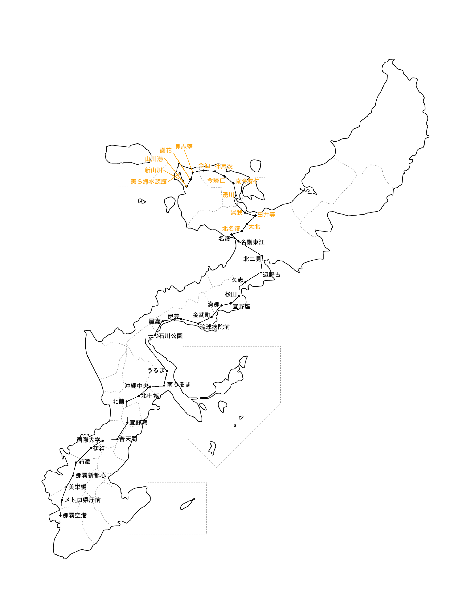

ここでは、沖縄メトロのルートなどについて取り上げています。
（画像をクリックすると、大きな画像が表示されます）
南北本線は沖縄の空の玄関口である那覇空港を起点に、沖縄本島を縦断し、名護へ至る全長約75kmの路線です。地上区間は約４割ほどで、地上区間のほどんどは高架区間です。深夜と早朝を除く全列車が、名護支線まで直通運転を行います。 普通電車では約2時間～3時間、急行電車では約2時間弱、特急電車では約1時間半で全線を乗り通すことができます。
名護支線は名護を起点に、北側の街を通り、美ら海水族館へ至る全長約25kmの支線です。 名護支線は約25分で全線を乗り通すことができます。 また繫忙期には臨時特急を設定し、那覇空港から最短1時間半～2時間で終点まで移動できます。
中部海岸線は那覇空港を起点に、宜野湾まで本線の南側を通り、宜野湾で交差して北側の海岸線を走る全長約80kmの路線です。南北本線より地上区間が多く、高架区間も少ないので、景色を楽しむことができます。特急電車の停車駅が最も少なく、約1時間強ほどで乗り通すことができます。